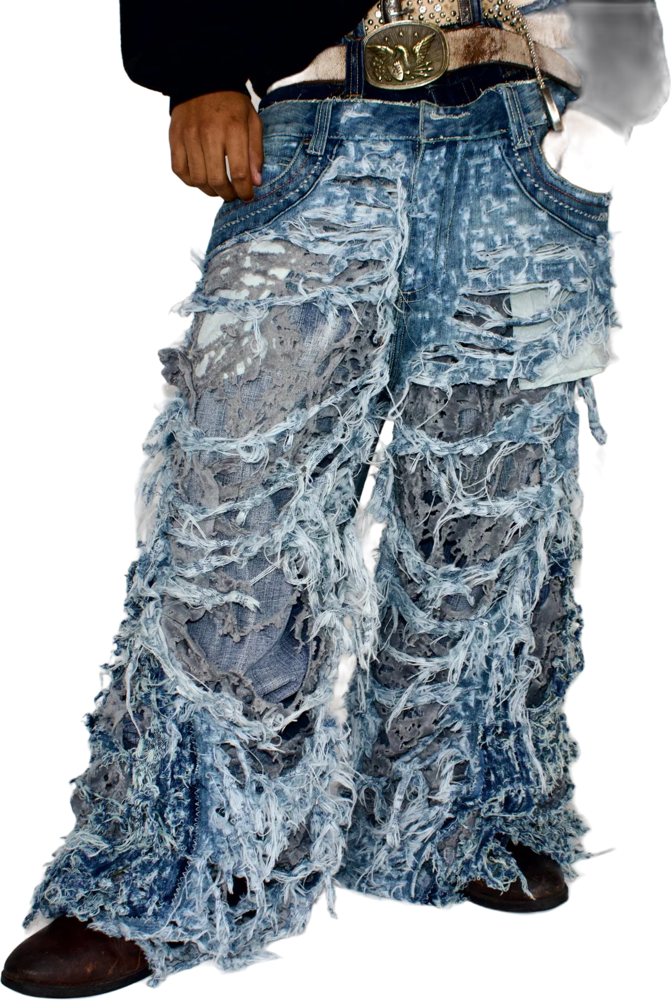
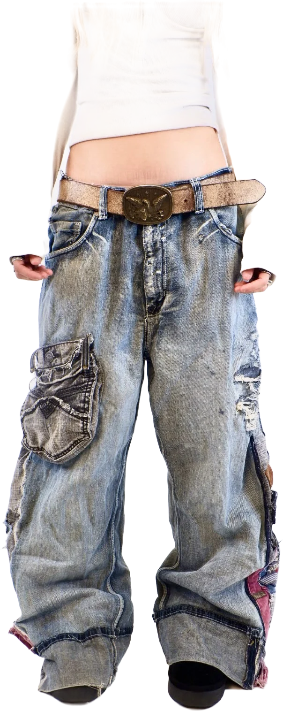
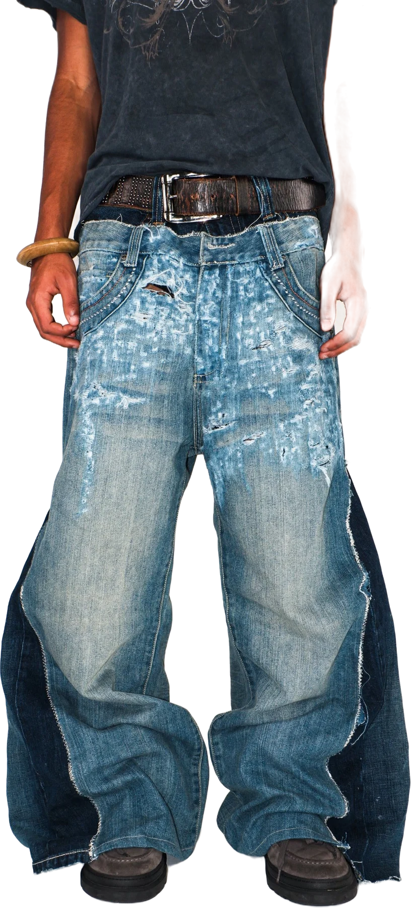
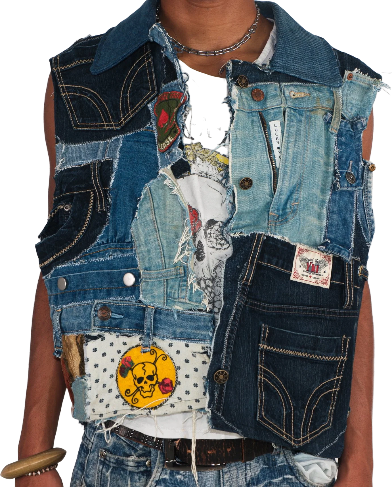
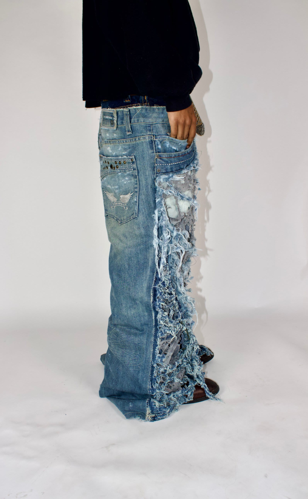
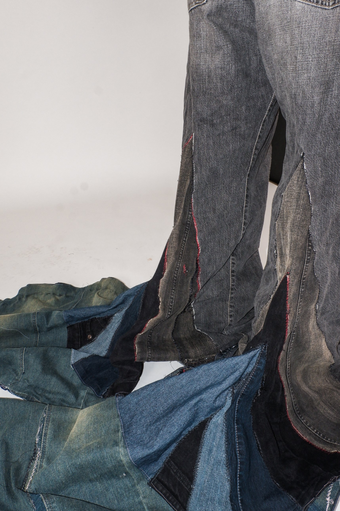
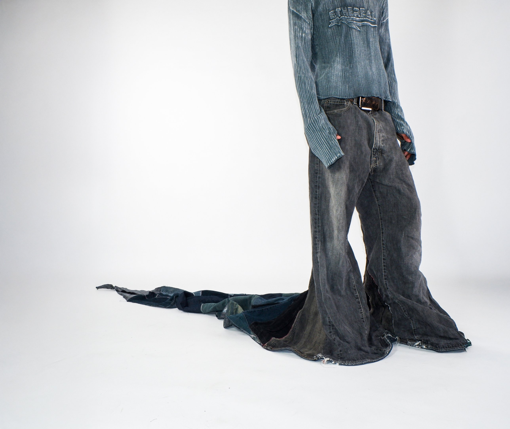
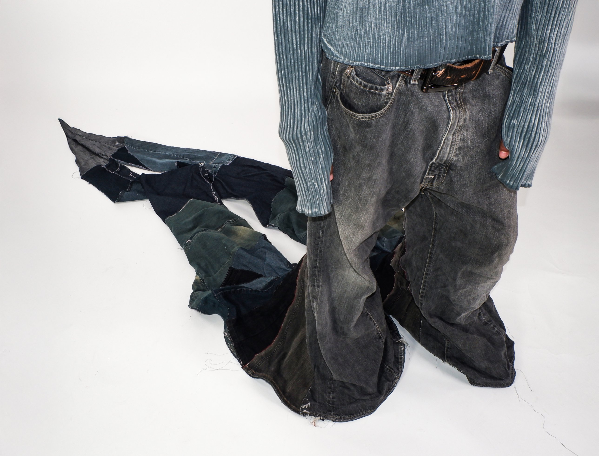
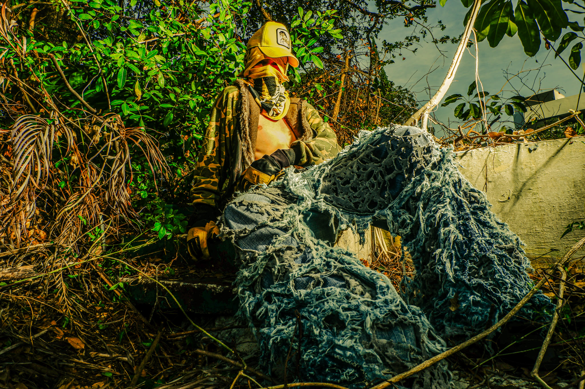

Bottoms · Drop 01 · No. 03
$ — your price
Buy · one available →| Measured flat | in | cm |
| Waist | 16.0 | 40.6 |
| Rise | 12.0 | 30.5 |
| Inseam | 31.5 | 80.0 |
| Leg opening | 11.0 | 27.9 |
Bottoms
$ —

Seen$ —

$ —

$ —
November 2026 · 4 pieces · Florida
Four pairs of jeans nobody wanted, taken apart and put back together as something else. sample text

Drag the line to see where each piece started. When the next drop comes out, this whole page moves into the Archive as “Drop 01 · November 2026”.
Project 02
Instead of a grey empty box, the project's name fills the frame in your denim, in the same spot the photo will go. It's the trick Tracy Ma used on covers when there was no good image: the type is the image.
Same idea in the Archive, for sold pieces without photos



Conceptual Art · Project 01 · 2026
I wanted a pair of jeans that you couldn't really walk away from. The train is every scrap left over from the last year, sewn end to end until it ran out.
It drags, it picks things up, it gets heavier. That's the point. sample, in your words

Motion on · warp, tilt, stitches, sliding words MANU Motion